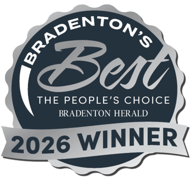

A park the community saved
Palma Sola Botanical Park sits in the "Old Palma Sola" section of northwest Bradenton — a garden with deep roots in Manatee County and the wider Tampa Bay area, home to many cultures across the centuries, from the Timucua through the Spanish era to today.
The park began in 1990, when local citizens and community groups rallied to save this site — once the Manatee County Nursery — from being sold off as surplus land. With the Bradenton Herald helping build public support, the Palma Sola Botanical Park Foundation, Inc. was incorporated in 1993 as a 501(c)(3) nonprofit to preserve the former nursery as green space. It has been evolving ever since, in partnership with Manatee County: the county owns the land, while the Foundation runs the collections, programming, events, and volunteers that make the park worth visiting.
Once the Manatee County Nursery — nearly sold off as surplus land.1990
Two buildings carry the story forward. The Galleria, added after 2000, hosts weddings, parties, and classes; the Baden building — now the office and Board/Bride's Room — began life as a florist shop that was moved onto the property. The park's real secret, though, is its climate: a protected, notably frost-free micro-climate that lets us grow rare palms, fruits, and flowering trees that wouldn't survive elsewhere this far north. In 2008 the Manatee Rare Fruit Council planted — and still tends — an extensive exotic fruit tree collection.
Non-Profit of the Year finalist
Named by the Manatee Chamber of Commerce, in the 46th year of its Small Business & Non-Profit Awards.
Bradenton's Best
Recognized by the community we serve — though we're proudest of being free and open every day.

Bay News 9
Featured on "Florida on a Tankful," thirty-three years after neighbors saved the site from development.
See the story →Horticulture Magazine
Featured in the national publication for our collections and mission.
See the story →
to save the site
501(c)(3) nonprofit
with Manatee County
no entrance fee